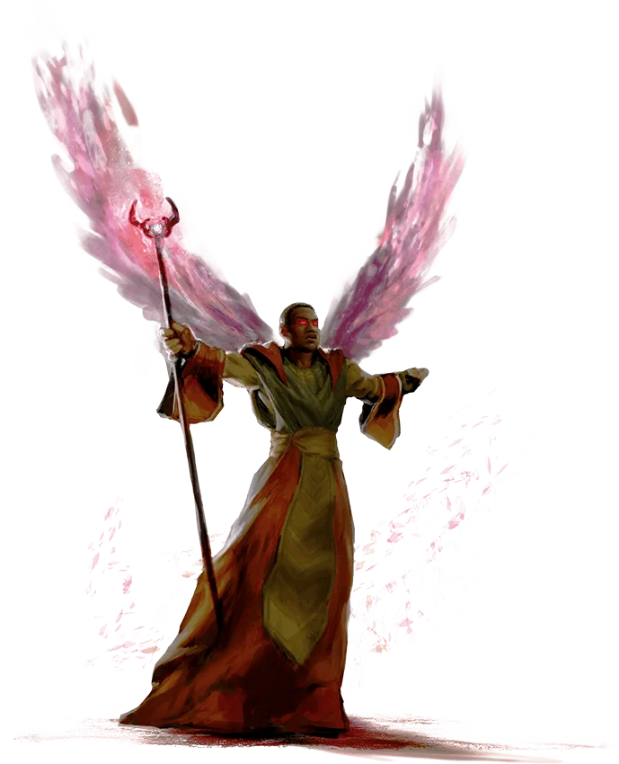

Campaign Races
Main page for viewing somewhat-meta information about the Campaign's Races.
Races

Humans
Ability Scores: All ability scores increase by +1
Creature Type: Humanoid
Size: Medium (5-7 feet tall)
Age: Humans mature in their mid-late teens and live less than a century.
After living ~80 years, Humans are at risk of developing Altere’s Curse (Dementia).
Speed: 30 feet
Skills: You gain proficiency in one skill of your choice.
Feat: You gain one feat of your choice.
Lore:
Native to Garna and Neo-Neprad. They are Humans.
Halfling
Ability Scores: Dexterity +2
Creature Type: Humanoid
Size: Small (2-4 feet tall)
Age: A Halfling reaches adulthood at the age of 20 and generally lives into the middle of his or her second century.
Speed: 25 feet
Lucky: When you roll a 1 on an attack roll, ability check, or saving throw, you can reroll the die and must use the new roll.
Brave: You have advantage on saving throws against being frightened.
Nimble: You can move through the space of any creature that is of a size larger than yours.
Natural Stealth: You can take the Hide action even when you are obscured only by a creature that is at least one size larger than you.
Lore:
Native to Garna. They are timid and introverted to others, but, are outgoing and welcoming to other Halflings. They remain neutral during wars, and rarely get involved in anything outside their little towns.
Orc
Ability Scores: Strength +2, Constitution +1, Intelligence -2
Creature Type: Humanoid
Size: Medium (6-7 feet tall)
Age: An Orc reaches adulthood at the age of 16, and lives for around half a century.
Speed: 30 feet
Aggressive: As a bonus action, you can move up to your speed toward a hostile creature that you can see.
Darkvision: 60ft.
Primal Intuition: You have proficiency in two of the following skills of your choice:
Animal Handling, Insight, Intimidation, Medicine, Perception, and Survival.
Powerful Build: You count as one size larger when determining your carrying capacity and the weight you can push, drag, or lift.
Relentless Endurance: When you are reduced to 0 hit points but not killed outright, you can drop to 1 hit point instead.
Once you use this trait, you can't do so again until you finish a long rest.
Savage Attacks: When you score a critical hit with a melee weapon attack, you can roll one of the weapon's damage dice one additional time and add it to the extra damage of the critical hit.
Lore:
Native to Garna. They are dumb, but strong and sturdy. Most become mercenaries, all are shunned by the people of Garna.
Dwarf
Ability Scores: Constitution +2, Strength +1
Creature Type: Humanoid
Size: Medium (4-5 feet tall)
Age: Dwarves mature at the same rate as Humans. They can live up to 350 years. Dwarves are not at risk of developing Altere’s Curse.
Speed: 25 feet
Darkvision: 60ft.
Dwarven Resilience: You have advantage on saving throws against poison, and you have resistance against poison damage.
Dwarven Combat Training: You have proficiency with the battleaxe, handaxe, light hammer, and warhammer.
Tool Proficiency: You gain proficiency with the artisan's tools of your choice: Smith's tools, brewer's supplies, or mason's tools.
Dwarven Toughness: Your Hit Point maximum increases by 1, and it increases by 1 again whenever you gain a level.
Stonecunning: As a Bonus Action, you gain Tremorsense with a range of 60 feet for 10 minutes. You must be on a stone surface or touching a stone surface to use this Tremorsense.
The stone can be natural or worked. You can use this Bonus Action a number of times equal to your Proficiency Bonus, and you regain all expended uses when you finish a Long Rest.
One With Stone: Whenever you make an Intelligence (History) check related to the origin of stonework, you are considered proficient in the History skill and add double your proficiency bonus to the check, instead of your normal proficiency bonus.
Lore:
Native to Jotunheim and Kyofu. They are blacksmiths and warriors who forge and repair on Kyofu, and smith weapons and armor on Jotunheim.
Goliath
Ability Scores: Strength +2, Constitution +1
Creature Type: Humanoid
Size: Medium (7-8 feet tall)
Age: Goliaths mature in their mid-late teens and live less than a century.
Goliaths are not at risk of developing Altere’s Curse (Dementia).
Speed: 30 feet
Natural Athlete: You gain proficiency in the Athletics skill.
Stone's Endurance: You can focus yourself to occasionally shrug off injury. When you take damage, you can use your reaction to roll a D12.
Add your Constitution modifier to the number rolled, and reduce the damage by that total. After you use this trait, you can't use it again until you finish a short or long rest.
Powerful Build: You count as one size larger when determining your carrying capacity and the weight you can push, drag, or lift.
You also have Advantage on any ability check you make to end the Grappled condition.
Mountain Born: You have resistance to cold damage. You're also acclimated to high altitude, including elevations above 20,000 feet.
Lore:
Native to Jotunheim and The Realm of Beasts. They are proud warriors and hunters who wish to live honourably. They are descendants of Giants but are not on good terms with Giants.
Gnome
Ability Scores: Intelligence +2, Dexterity +1
Creature Type: Humanoid
Size: Small (3-4 feet tall)
Age: Gnomes mature at the same rate as Humans. Gnomes tend to live for half a millenium, with minimal risk of developing Altere's curse past 350 years.
Speed: 25 feet
Deepseek: 60ft. Can see colour.
Gnomish Cunning: You have Advantage on Intelligence, Wisdom, and Charisma saving throws.
Artificer's Lore: Whenever you make an Intelligence (History) check related to magic items, alchemical objects, or technological devices, you can add twice your proficiency bonus, instead of any proficiency bonus you normally apply.
Stone Camouflage: You have advantage on Dexterity (Stealth) checks to hide in rocky terrain.
Tinker: You have proficiency with artisan's tools (tinker's tools). Using those tools, you can spend 1 hour and 10 gp worth of materials to construct a Tiny clockwork device (AC 5, 1 hp).
The device ceases to function after 24 hours (unless you spend 1 hour repairing it to keep the device functioning), or when you use your action to dismantle it; at that time, you can reclaim the materials used to create it.
You can have up to three such devices active at a time. When you create a device, choose one of the following options:
Clockwork Toy: This toy is a clockwork animal, monster, or person, such as a frog, mouse, bird, dragon, or soldier.
When placed on the ground, the toy moves 5 feet across the ground on each of your turns in a random direction. It makes noises as appropriate to the creature it represents.
Fire Starter: The device produces a miniature flame, which you can use to light a candle, torch, or campfire. Using the device requires your action.
Music Box: When opened, this music box plays a single song at a moderate volume. The box stops playing when it reaches the song's end or when it is closed.
Lore:
Native to Jotunheim and Kyofu. They are tinkerers and crafters who innovate on Kyofu and create weapons on Jotunheim.

Warforged
Ability Scores: Constitution +2, Any other +1
Creature Type: Humanoid
Size: Medium (6-7 feet tall)
Age: Have no known age. Have never shown signs of natural deterioration.
Speed: 30 feet
Constructed Resilience: You do not need to eat, sleep, breathe, or drink. You are immune to poison and disease. Magic cannot put you to sleep.
Sentry's Rest: When taking a long rest, at least 6 hours must be spent motionless.
Integrated Protection: You gain a +1 bonus to Armor Class. To wear any armor, you must fuse it with your body over the span of 1 hour. Armor you don cannot be forcefully removed.
Specialized Design: You gain one skill proficiency and one tool proficiency of your choice.
Lore:
Native to Jotunheim and Kyofu. They are mechanical soldiers designed by Dwarfs and Gnomes to kill Giants and tribes of Goliaths.

Elves
Ability Scores: Wisdom +2
Creature Type: Humanoid
Size: Medium (6-7 feet tall)
Age: Although Elves reach physical maturity at about the same age as Humans, the elven understanding of adulthood goes beyond physical growth to encompass worldly experience.
An Elf typically claims adulthood and an adult name around the age of 100 and can live to be 750 years old, most Elves tend to live for 400 years. After living for half a millenium there is a risk of developing Altere's curse.
Speed: 30 feet
Darkvision: You have Darkvision with a range of 60ft.
Fey Ancestry: You have Advantage on saving throws you make to avoid or end the Charmed condition.
Keen Senses: You have proficiency in the Insight, Perception, or Survival skill.
Trance: You don't need sleep, and magic can't put you to sleep. You can finish a Long Rest with just 4 hours of meditation.
Subraces:
High-Elf (Sun/Moon):
Ability Scores: Intelligence +2, Dexterity +1
Age: High-Elves share the aging patterns of Elves, although High-Elves tend to live for thousands of years without Altere's Curse.
Elf Weapon Training: You have proficiency with the longsword, shortsword, shortbow, and longbow.
Cantrip: You know one cantrip of your choice from the wizard spell list. Intelligence is your spellcasting ability for it.
Extra Language: You can speak, read, and write one extra language of your choosing.
Astral-Elf:
Astral Step: As a bonus action, you can magically teleport up to 30 feet to an unoccupied space you can see.
You can use this trait a number of times equal to your proficiency bonus, and you regain all expended uses when you finish a long rest.
Trance: You don't need to sleep, and magic can't put you to sleep. You can finish a long rest in 4 hours if you spend those hours in a trancelike meditation, during which you remain conscious.
Whenever you finish this trance, you gain proficiency in one skill of your choice and with one weapon or tool of your choice.
You mystically acquire these proficiencies by drawing them from shared elven memory and the experiences of entities on the Astral Sea, and you retain them until you finish your next long rest.
Extra Language: You can speak, read, and write one extra language of your choosing.
Lore:
Native to the Feywild, with the exception of Astral Elves. High-Elves live in luxury and do not accept anything less than that.
Elves prefer to live in smaller groups, or tribes outside the High-Elven city.
Aarakocra
Ability Scores: Dexterity +2, Wisdom +2
Creature Type: Humanoid
Size: Medium (5-6 feet tall)
Age: Aarakocra mature at the age of 3. They rarely live longer than 30 years.
Speed: 30 feet walking, 50 feet flying.
Talons: You are proficient with your unarmed strikes, which deal 1D4 + your Strength modifier slashing damage on a hit.
Flight: You have a flying speed of 50 feet. To use this speed, you can't be wearing medium or heavy armor.
Dive Attack: If you are flying and dive at least 30 ft. straight toward a target and then hit it with a melee weapon attack, the attack deals an extra 1d6 damage to the target.
Lore:
Native to Aerialis. They are subservient to Dragons and Dragonborn. Very few Aarakocra are free, and even fewer fight to remain so.

Strig
Ability Scores: Strength +2, Constitution +1
Creature Type: Bird-Humanoid
Size: Small (3-4 feet tall)
Age: Strigs reach maturity around the age of 15. They can live for up to 80 years.
Speed: 35 feet walking, 25 feet hover.
Glide: Using your feathered arms, you can slow your fall, and glide short distances.
When falling you can use your reaction to spread your arms, stiffen your wing feathers, and slow your descent.
While doing so, you continue to fall gently at a speed of 60 feet per round, taking no fall damage when you land.
If you would fall at least 10 feet in this way, you may fly up to your movement speed in one direction you choose, although you cannot choose to move upwards, landing in the space you finish your movement.
You cannot glide while carrying heavy weapons or wielding a shield (though you may drop any held items as part of your reaction to spread your arms). You cannot glide while wearing heavy armor, or if you are encumbered.
Talons: You have a flying speed of 50 feet. To use this speed, you can't be wearing medium or heavy armor. Additionally, you have advantage on Strength (Athletics) checks made to climb any surface your talons could reasonably grip.
Darkvision: 60ft.
Patterned Feathers: You have advantage on Dexterity (Stealth) checks when you attempt to hide in a forest.
Survivor: You have proficiency in the Survival skill.
Lore:
Proud, noble, and free from the rule of Dragons. They are a people who spend all their time rebuilding their homes after Dragons attack, and fighting to protect their freedom.
Strigs are native to Aerialis and take the form of cute and small owl creatures.

Dragonborn
Creature Type: Humanoid
Size: Medium (5-8 feet tall)
Age: Dragonborn reach maturity around the age of 6. They can live for up to 80 years, their risk of Altere's curse is the same as Humans.
Speed: 30 feet
Draconic Ancestry:
| Dragon Type | Damage Type | Resistance |
|---|---|---|
| Black, Copper | Acid | Acid |
| Blue, Bronze | Lightning | Lightning |
| Brass, Gold, Red | Fire | Fire |
| Green | Poison | Poison |
| Silver, White | Cold | Cold |
Breath Weapon: When you take the Attack action on your turn, you can replace one of your attacks with an exhalation of magical energy in either a 15-foot Cone or a 30-foot Line that is 5 feet wide (choose the shape each time). Each creature in that area must make a Dexterity saving throw (DC 8 plus your Constitution modifier and Proficiency Bonus). On a failed save, a creature takes 1D10 damage of the type determined by your Draconic Ancestry trait. On a successful save, a creature takes half as much damage. This damage increases by 1D10 when you reach character levels 5 (2D10), 11 (3D10), and 17 (4D10). You can use this Breath Weapon a number of times equal to your Proficiency Bonus, and you regain all expended uses when you finish a Long Rest.
Damage Resistance: You have resistance to the damage type associated with your draconic ancestry.
Lore:
Native to Aerialis. They are rarely born, and instead created by Dragons to be servants. Most Dragonborn are in cults which worship specific Dragons
Githyanki
Ability Scores: Strength +2, Intelligence +1
Creature Type: Humanoid
Size: Medium (5-7 feet tall)
Age: Githyanki reach maturity at the same rate as Humans. They live endlessly. They have the same risk of Altere's Curse as Elves.
Speed: 30 feet
Astral Knowledge: You can mystically access a reservoir of experiences of entities connected to the Astral Plane.
Whenever you finish a long rest, you gain proficiency in one skill of your choice and with one weapon or tool of your choice as you momentarily project your consciousness into the Astral Plane.
These proficiencies last until the end of your next long rest.
Githyanki Psionics: You know the mage hand cantrip, and the hand is invisible when you cast the cantrip with this trait.
Starting at 3rd level, you can cast the jump spell with this trait. Starting at 5th level, you can also cast misty step with it.
Once you cast jump or misty step with this trait, you can't cast that spell with it again until you finish a long rest. You can also cast either of those spells using any spell slots you have of the appropriate level.
Intelligence, Wisdom, or Charisma is your spellcasting ability for these spells when you cast them with this trait (choose when you select this race).
None of these spells require spell components when you cast them with this trait.
Psychic Resilience: You have resistance to psychic damage.
Decadent Mastery: You learn one language of your choice, and you are proficient with one skill or tool of your choice. In the Astral Sea, Githyanki have bountiful time to master odd bits of knowledge.
Lore:
Githyanki are soldiers who fuel the endless wars of the sea. They are the Natives, yet never fight for themselves.
They are strong, and proud warriors. The majority of Githyanki serve the Empire of Shaire.
Githzerai
Ability Scores: Wisdom +2, Intelligence +1
Creature Type: Humanoid
Size: Medium (5-7 feet tall)
Age: Githzerai reach maturity at the same rate as Humans. They live endlessly. They have the same risk of Altere's Curse as Elves.
Speed: 30 feet
Githzerai Psionics: You know the mage hand cantrip, and the hand is invisible when you cast the cantrip with this trait.
Starting at 3rd level, you can cast the shield spell with this trait. Starting at 5th level, you can also cast the detect thoughts spell with it.
Once you cast shield or detect thoughts spell with this trait, you can't cast that spell with it again until you finish a long rest. You can also cast either of those spells using any spell slots you have of the appropriate level.
Intelligence, Wisdom, or Charisma is your spellcasting ability for these spells when you cast them with this trait (choose when you select this race).
None of these spells require spell components when you cast them with this trait.
Mental Discipline: Your innate psychic defenses grant you advantage on saving throws you make to avoid or end the charmed and frightened conditions on yourself.
Psychic Resilience: You have resistance to psychic damage.
Decadent Mastery: You learn one language of your choice, and you are proficient with one skill or tool of your choice. In the Astral Sea, Githzerai have bountiful time to master odd bits of knowledge.
Lore:
Natvie to the Astral Sea. They are the scholars, philosophers, teachers, engineers who upkeep the Astral Sea's technology.
The endless wars of the Sea would not be maintainable without them.

Aasimar
Ability Scores: Charisma +2, Wisdom +1
Creature Type: Humanoid
Size: Medium (5-7 feet tall)
Age: Aasimar mature at the same rate as Humans, but live for an additional half century.
After living ~100 years, Aasimar are at risk of developing Altere’s Curse (Dementia).
Speed: 30 feet
Darkvision: 60ft.
Celestial Resistance: You have Resistance to Necrotic damage and Radiant damage.
Healing Hands: As a Magic action, you touch a creature and roll a number of d4s equal to your Proficiency Bonus.
The creature regains a number of Hit Points equal to the total rolled. Once you use this trait, you can't use it again until you finish a Long Rest.
Light Bearer: You know the Light cantrip. Charisma is your spellcasting ability for it.
Celestial Legacy: You know the light cantrip. Once you reach 3rd level, you can cast the lesser restoration spell once with this trait, and you regain the ability to do so when you finish a long rest.
Once you reach 5th level, you can cast the daylight spell once with this trait, and you regain the ability to do so when you finish a long rest. Charisma is your spellcasting ability for these spells.
Lore:
Mortals who have been blessed by Celestials or carry a spark of their souls. They are rarely found outside the Divine Realm and Astral Sea
Nephilim
Ability Scores: Wisdom +2, Charsima +1
Creature Type: Humanoid
Size: Medium (5-7 feet tall)
Age: Nephilim reach adulthood by 25, and live for up to 300 years. They are not at risk of Altere's Curse
Speed: 30 feet
Celestial Legacy: You know the Guidance cantrip. Charisma is your spellcasting ability for it.
Storm Affinity: You have resistance to lightning damage. When you roll lightning or thunder damage, you can reroll one damage die and must use the new result.
Wings of Heavens: Feathers grace your limbs or back. As a bonus action, you manifest spectral wings for 1 minute, gaining a fly speed of 30 ft.
You can use this trait a number of times equal to your proficiency bonus, regaining all uses after a long rest.
Divine Resilience: You have advantage on saving throws against being frightened or charmed.
Heavenly Judgement: When you deal damage to a creature with an attack or spell, you can channel divine energy to make the attack especially potent. The creature takes an extra 1D6 radiant damage.
You can use this trait a number of times equal to your proficiency bonus, regaining all uses after a long rest.
Lore:
Nephilim are born from the union of an Angel or Celestial and a Human. They are often revered and considered messengers of the Gods.
They show off their light, golden hair, eyes, and wings. As opposed to hiding them like Cambion.
Cambion
Ability Scores: Charisma +2, Intelligence +1
Creature Type: Fiend
Size: Medium (5-7 feet tall)
Age: Nephilim reach adulthood by 20, and live for up to 300 years. They are not at risk of Altere's Curse
Speed: 30 feet
Infernal Legacy: You know the Friends cantrip. Charisma is your spellcasting ability for it.
Fiendish Charm: You can cast Charm Person once with this trait. Starting at 3rd level, you can cast Suggestion once.
Charisma is your spellcasting ability. You regain these after a long rest.
Dark Bargain: When you fail an ability check or saving throw, you can add 1d6 to the roll after seeing the result. You must then take 1d6 necrotic damage.
You can use this trait a number of times equal to your proficiency bonus, regaining all uses after a long rest.
Hellish Resistance: You have resistance to fire damage.
Soul Debt: Fiends recognize your lineage. You have disadvantage on Charisma (Deception) checks when lying to fiends,
and advantage on Charisma (Persuasion) checks when offering them something they desire.
Lore:
Cambion are born from the consumation of a Demon, Devil, or other Fiend, and a Human.
They are shunned and outcast for being Fiends, so Cambion hide their small horns and wings. Some going as far as to surgically remove their Fiendish traits.
Cambion have discoloured eyes, but most people find them attractive rather than repulsive.